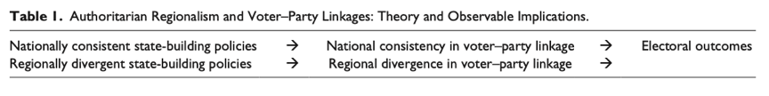
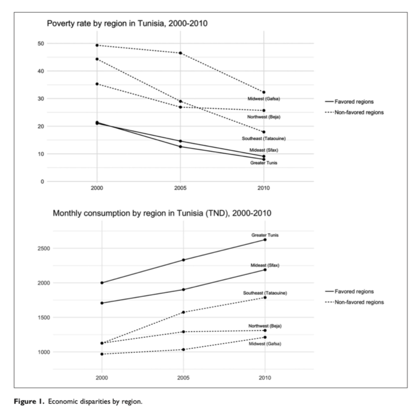
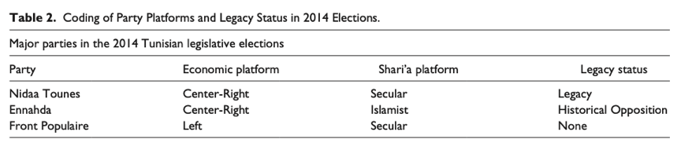
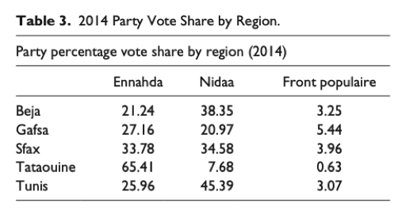
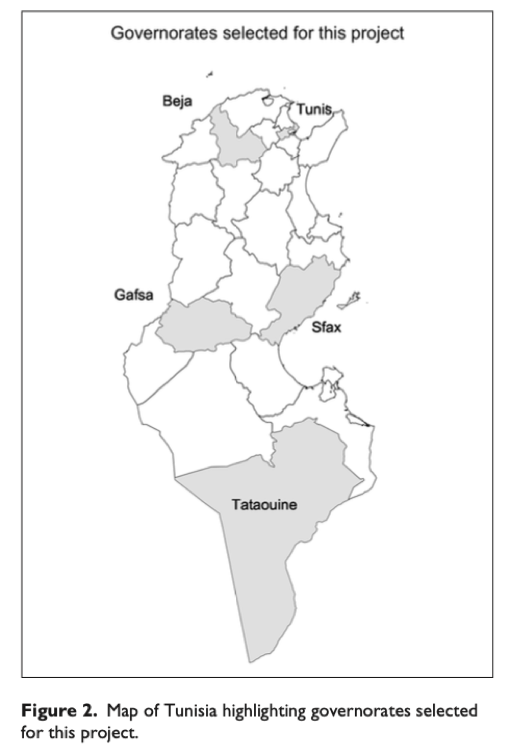
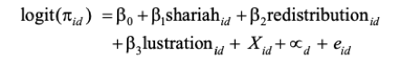
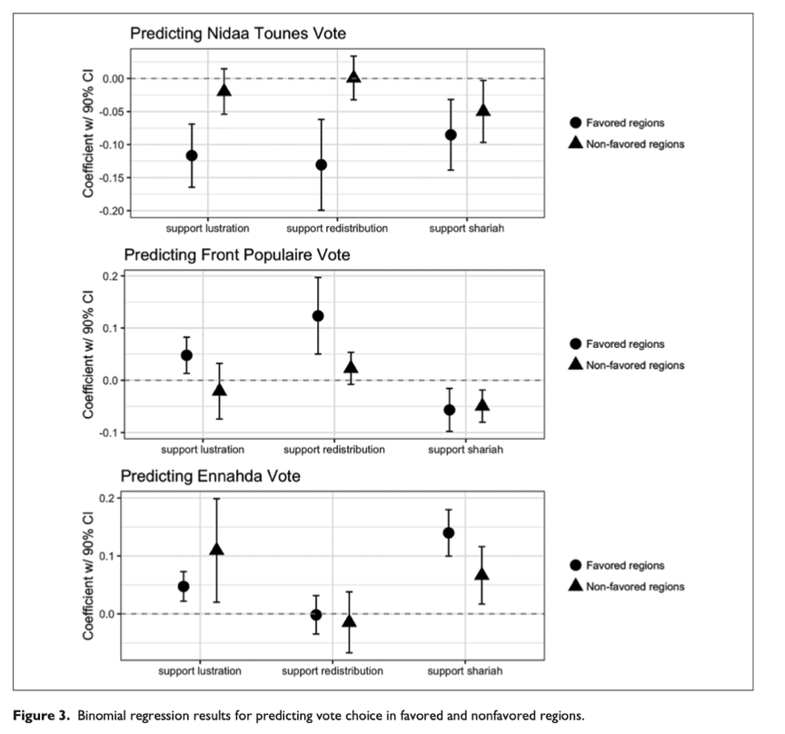
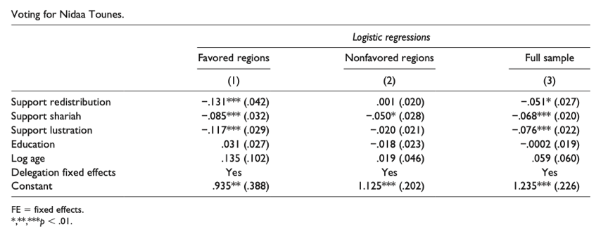
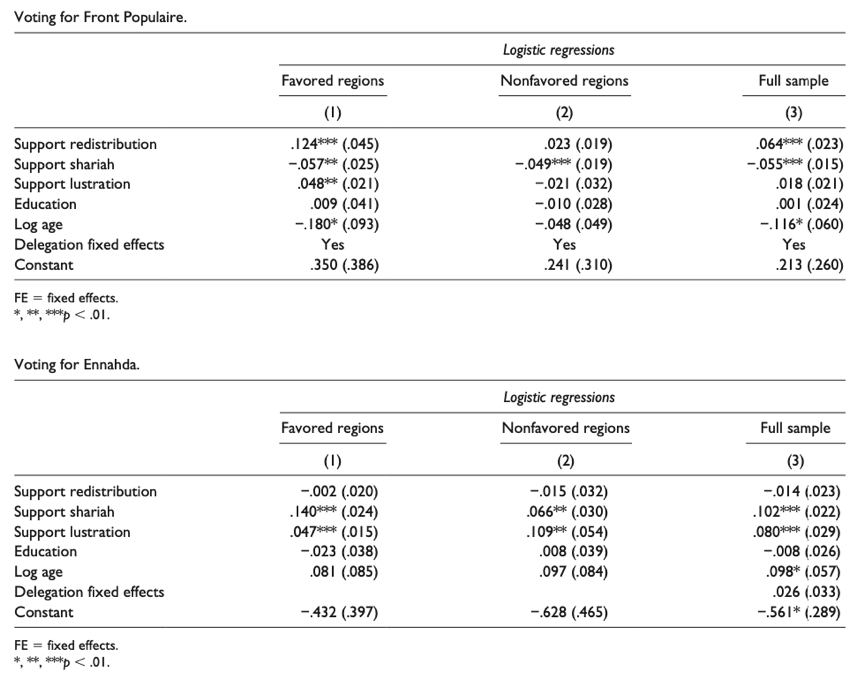

收录于合集

作品简介
【作者】 尚塔尔·伯曼（Chantal E.Berman），哈佛大学国际与地区研究院（Harvard Academy for International and Area Studies）学者（Academy Scholar），普林斯顿大学政治学博士。主要研究兴趣为社会运动与社会动员、发展政治经济学、民主化、镇压与政治暴力、中东政治、调查方法、定量与田野方法等。
伊丽莎白·纽金特（Elizabeth R.Nugent），耶鲁大学政治学系助理教授，普林斯顿大学政治学博士。其研究探索威权主义背景下的政治行为、宗教和政治以及强制性制度的起源，综合运用调查、投票、档案和访谈数据，并结合定量、定性和实验的方法。
【编译】 许文婷（国政学人编译员，北京大学）
【校对】 崔宇涵
【审核】 王川
【排版】 高佳美
【来源】 Berman, Chantal E., and Elizabeth R. Nugent. “Regionalism in New Democracies: The Authoritarian Origins of Voter–Party Linkages.” Political Research Quarterly 1 (2019): 15.

期刊简介
《政治研究季刊》（Political Research Quaterly）是一本政治学领域的季度同行评审学术期刊，创刊于1948年，由SAGE出版集团公司代表犹他大学出版，是西部政治学协会（Western Political Sciences Association）的官方刊物。该刊的主要议题涵盖美国政治，比较政治，性别、种族与身份，国际关系，方法，政治理论，公共管理，公共法，公共政策等领域。根据期刊引证报告数据，该刊的2018-2019年的影响因子为1.581，在176个政治学期刊中排名第75。 __
新民主国家的区域主义：选民-政党间联系的威权主义根源
Regionalism in New Democracies: The Authoritarian Origins of Voter–Party Linkages
内容提要
本文探究了威权国家建构政策中地方层面的差异对政权更迭后选民- 政党间关系的路径依赖效应。作者认为长期的区域偏爱与边缘化模式使得选民对政党的态度与偏好上产生了模式化的区域性异质。后殖民时代的国家建构政策通过具体的干预措施产生了得利者与失利者，并反过来塑造了当地公民在这些政策领域的偏好，产生了可能会被民主政治激发的争端轴心（axes of contestation）。作者认为，与区域性一致的国家建构政策相关的态度应作为跨地区投票选择的统一性决定因素，而与存在区域性分歧的国家建设政策相关的态度会在其对投票选择的影响上经历模式性的地区差异。本文通过对突尼斯国家建构的历史分析和2014年突尼斯首次民主立法选举之日对五个不同地区的选民进行的出口民意调查（exit survey），从实证层面论证了这些观点。本文的观点为有关在地区层面研究政治转型的重要性的不断发展的文献做出了贡献。
文章导读
01
研究问题
本文主要探究威权统治的政策遗产对新生民主国家的选民- 政党关系的形成过程产生的影响。在新生的民主国家，选民与政党间的关系经历了重塑的过程，公民可以与历史遗留的政党或是新生政党建立或重塑关系，政党也寻求在不同的地区建立起持久的联合。达登（Darden and Grzymala-Busse 2006）与奥唐纳（O’Donnell and Schmitter 1986）等学者指出，初次选举的结果对此后的政治与经济结果有着十分显著的影响，它们左右着专制收缩（autocratic retrenchment）与民主巩固（democratic consolidation）的可能性。因此，对学者们来说，寻求新民主国家中选民- 政党关系的根源是从规范和理论层面都有益的。
以科利尔（Collier and Collier 1991）和塔克（G. Pop-Eleches and Tucker 2011）等为代表的“历史遗产”派学者已经对威权时代政策对新兴民主政权政治体系的持续性影响做了大量的研究。这些研究大多基于跨国层面，探究作为整体的国家政治制度对政权更迭后的公众舆论与投票行为的影响，但这样的比较往往会忽视历史经验中的国内差异，尤其是在威权时代国家- 社会关系的建构在国家内部各区域存在差异的情况下。因此，理解政治与社会进程中的地方层面差异十分必要。
本文即旨在探究威权时代国家建构策略的地区性差异对民主转型中选民- 政党关系的路径依赖效应。差异性的威权国家建构政策会产生得利者与失利者，转而塑造了公民在这些政策领域的偏好，并转化为在民主政治环境下被激活的争端轴心。本文重点探究的是威权政府国家建构政策的地区性差异对选民态度以及最终投票行为的影响，认为地区差异化的发展政策将扩大这一方面的差异。本文运用突尼斯2014年10月立法选举日当天对选民进行的原创调查数据对论点进行论证。
本文将首先回顾现有关于威权遗产的文献，构建关于地区性国家建构干预如何影响公众舆论和选民- 政党关系的理论。之后文章将介绍突尼斯的历史经验，突尼斯实行了全国性的世俗化政策，但在经济发展和分配政策方面却是存在很大地区性差异的。第三部分将提供本文原创调查的数据，并比较在历史上历史上“受惠”地区（那些受到特定国家建构干预的地区）与“未受惠”地区（那些没有受到该政策的地区）的三大重要政党的投票预测指标，并得到了与本文理论相一致的结果。最后，本文表明人民对彻底清算威权时代旧政府的意愿也同样在其对选举的影响方面具有区域差异性。
02
理论与概念：遗产、地域性及公民-政党联系
文章首先介绍了“历史遗产”的概念。根据贝辛格与科特金（Beissinger and Kotkin 2014）等学者的定义，“历史遗产”指的是“过去的制度与政策与随后的行为或信念间持续性的因果关系”。不同于简单的历史连续性模式，“历史遗产”概念强调的是影响力链条在重大政治断裂（political rupture）后依然得以持续，尤其是在政权更迭的情况下。已有许多学者试图探究后威权时代政党体系、经济发展和地缘结盟等方面结果的差异性（Darden and Grzymala-Busse 2006; Hicken and Kuhonta 2015; Mainwaring 1989; Riedl 2014），亦有规范性研究的学者热衷于寻找可能阻碍转型中的政权巩固民主的因素（Linz and Stepan 1996; O’Donnell and Schmitter 1986），因此有很多威权研究的学者聚焦于独裁者可能重返政坛的条件（Bruszt and Stark 1991; Bunce 2005; Darden and Grzymala-Busse 2006; Jhee 2008; Kopstein and Reilly 2000; Tucker 2006）。
作者认为，如突尼斯般的后殖民主义威权政体的“历史遗产”效应尤为突出，因为它们在公民的生活中扮演积极且通常是变革性的角色，指导和改变着包括工业、农业、劳工、宗教等在内的社会生活的方方面面（Migdal 1988）。国家建构的干预会产生得利者与失利者，使得经历了这些政策的公民对中央政府及其政策产生不同的看法。历史遗产研究的根基在于威权主义下的经历可能塑造公民的态度与偏好，这对政权更迭后其政治行为非常重要。与这一逻辑相应，作者假设 威权主义下的国家建构干预在公民之间产生了争端轴心（axes of contestation），而这些争端可能会被后来的民主竞争所激发和利用。 因此，在塑造公民的 投票行为（voting behavior） 外，本文认为国家建构干预也塑造了 选民-政党间联系(voter-party linkage) ，在本文中定义为 在一个多党派和多维度的投票空间中将选民与政党联系起来的政策态度。
本文在现有研究的基础上提出了一个新的待理论化的因素集： 威权政府国家建构策略的地区性差异。 威权地域性多是源于地理禀赋（geographic endowment）与威权政权生存逻辑（the logic of authoritarian survival）间的互动，例如施行出口导向发展战略的国家更倾向于投资沿海地区，但它也受精英政治的动机和竞争驱动，例如领导人以各种政策倾斜的方式为其家乡提供优惠（Burgess et al. 2015; Hodler and Raschky 2014; Kasara 2007; Kramon and Posner 2013; Shleifer and Vishny 1994）。此外，与地方投资有关的早期决策也可能会对后期的投资模式产生强烈的路径依赖效应（Herbst 2000）。
威权政府国家建构策略的这一差异性说明，不是所有的干预政策都有着相同的地区性逻辑。这种差异程度的差异性（variation in the degree of variation）有助于确定威权地区主义对政权更迭后投票行为的影响，正如表1所示。本文认为，全国一致实行的国家建构政策会在区域间形成相似的偏好模式，也因此导致在早期民主选举中选择投票的决定因素——相关态度的强度在国家层面也具有一致性。而相反地，与针对区域的国家建构政策相关的态度在决定投票选择的能力上应有所不同。总之，本文的理论预测了 历史上“受惠”地区（那些受到特定国家建构干预的地区）与“未受惠”地区（那些没有受到该政策的地区）之间的选民-政党间联系的模式异质性。

03
突尼斯国家建构政策的历史差异
突尼斯是在2011年的阿拉伯剧变后唯一走上民主化道路的国家，因此成为了这一长期以来以稳定的威权统治为特征的地区的一个重要的转型案例。突尼斯60年的威权统治中实行过全国一致性的国家建构政策（世俗化和压制有组织的宗教活动），也实行过区域性的政策（经济发展和分配政策），本文即借这一事实对前述理论作出检验。
1956年突尼斯从法国殖民中获得独立，经历了两任威权总统：哈比卜·布尔吉巴（Habib Bourguiba，1957-1987）和宰因·阿比丁·本·阿里（Zine el-`Abidine Ben Ali ，1987–2011）。这两位总统的施政目标都是打造一个现代化和世俗化的突尼斯，因此，作为突尼斯国家建构一个重要部分的世俗化和压制有组织的宗教生活的政策是 全国性 的，由中央部门统一构思并在全国各地的农村与城市同样地施行。独立之初，布尔吉巴的法式世俗化（laïcité）与“消灭落后文化宗教规范”主张与萨拉赫·本·尤素夫（Salah Ben Youssef）的以阿拉伯- 穆斯林价值观为核心的国家建构计划相互竞争，前者最终获得胜利，这奠定了突尼斯独立后国家建构的世俗化基调。早在1960年，布尔吉巴就公开反对突尼斯人过斋月，并于1985年通过立法禁止妇女在公立教育机构和政府大楼内戴头巾。政府还降低了著名的伊斯兰宗教中心扎伊图纳大学（Zitouna University）的自治度，并下大力气控制了国内的清真寺，防止这些空间被用作政治反对活动。
本·阿里上台后，延续了布尔吉巴时代公共场合世俗化的主张，并进一步在公众生活中清除政治化的伊斯兰。20世纪70-80年代，伊斯兰主义的政治反对派开始正式组织起来，政府也开始出台全国性的措施管控个人的宗教表达、宗教机构与宗教场所。1988年，本·阿里政府通过立法，未经获批禁止在清真寺中由不属于主管部门的任何人员开展活动。1989年复兴运动（Haraket Ennahda）在全国议会选举中表现突出，政府旋即逮捕了八千名知名领导人和活跃分子。可以看出，在这两位后殖民领导人当政的时期，有关宗教和公共生活的政策是具有全国一致性的。
与之相对的是，在同样的国家建构时期，经济发展和分配政策在突尼斯不同地区间具有很大的差异。自布尔吉巴时代开始，政府经济现代化的投资明显向突尼斯的北部（包括首都地区）和东部沿海倾斜。在短暂的进口替代工业化（import substitutionindustrialization，ISI）时期后，突尼斯在北非地区率先走上自由化道路，形成了一套由基础设施投资、国家与部分国内资本家之间的紧密联系以及为国内外公司提供财政激励和网络支持的法律框架支持的促进出口的战略。旅游业和出口导向工业的发展为突尼斯的沿海和城市地区带来了就业机会与基建投资，促进了这些地区的发展。
与此相反，政府对南部和内陆地区的经济现代化和多元化方面投入较少，维持了采掘和农业经济的原貌。在20世纪70至80年代的债务危机中，突尼斯启动了结构性调整与私有化的计划，这导致对南方和内陆投资的进一步缩水。突尼斯还与其工会UGTT采取了社团主义和排他性的劳资关系，使非城市的突尼斯人在沿海地区所享有的许多劳工福利中被边缘化。需要注意的是，突尼斯政府在投资方面的地域不平衡，也在一定程度上是政府对作为曾经尤素夫运动大本营的南方地区的一种“报复”和压制的行为。尽管政府在80-90年代开始采取措施解决地区发展不平衡问题，这些发展计划“不足以改变主要的资源分配机制或显著减少不平等程度”。如图1所示，突尼斯国家统计局数据显示地区不平等状况在贫困率、就业、生活水平等方面均持续存在。

04
突尼斯2014年立法选举：政党与政纲
2011年巨变后，突尼斯举行了立宪议会选举，着手起草一部新宪法。2014年10月26日，突尼斯举行了首次立法选举。这一选举中主要竞争的是三大党派：突尼斯呼声（Nidaa Tounes）、复兴运动（Ennahda）和人民阵线（Front Populaire）。表二概括了这三大政党在有关经济与沙利亚法（伊斯兰）方面的观点主张和与威权政府的关系（Legacy）。

如表3所示，2014年议会选举期间的地区投票结果显示出明显的差异，历史上受惠的北部与东部地区更倾向于投票给突尼斯呼声党，复兴运动的票仓集中于南部地区，人民阵线则在西部地区崛起。

05
研究设计
本文作者于2014年10月26日突尼斯立法选举当日在突尼斯国内五个政区进行了出口民意调查（exit survey），共调查了1157名选民。在离开投票站时，每个调查受访者都直接回答了一系列与社会和人口背景、政策偏好以及过去和当前的政治行为有关的开放式和封闭式问题，此外还有该选民此次的投票选择。选择的五个地区分别为在威权时代受到政策优待的斯法克斯省（Sfax）和大突尼斯地区（Tunis），以及被边缘化的巴杰省（Beja）、加夫萨省（Gafsa）和泰塔温省（Tataouine），这五个地区的区域位置如图2所示。作者进一步在每个政区内选择了六个次级行政区，并在每个行政区内选择了一个投票站作为样本。

06
分析与结果
本文对各结果变量集分别采用二项Logistic回归（binomial logistic regression）。为了检验关于选民与政党之间在历史上受惠和非受惠地区之间的偏好差异的假设，本文将样本划分为受惠地区（大突尼斯与斯法克斯省）和非受惠地区（加夫萨省、泰塔温省和贝杰省），样本中仅包括表述了其投票选择的选民。文中比较了三个主要偏好变量的大小和显著性：作为法律基础的伊斯兰教法（shariah）支持，对再分配（redistribution）的支持和对清算（lustration）前政府的支持作为每个子集中投票选择的预测指标。因此，在每个样本子集内及对于每个政党而言，可列出回归方程如下：

其中表示区域固定效应，用于解释区域层面不可观测的异质性，是表示个人层面可能影响投票选择的协变量向量，包括年龄的对数，以及用五分制衡量的教育水平。回归分析的结果如图3及下表所示。
  
与本文假设相一致，对沙利亚法的支持对投票选择的影响是在全国层面相对一致的，支持沙利亚法的人群都倾向于投票给复兴运动，反对的人群则都倾向于投给突尼斯呼声和人民阵线，各子集的系数大小也相似。而相反地，关于对再分配的支持在历史上受惠地区和非受惠地区间的效应具有显著差别。在历史受惠地区，对再分配的支持是影响投票选择的显著决定因素，在历史非受惠地区则不是，这佐证了差异化的国家建构政策造成的投票行为的地区差异。在历史受惠地区，支持再分配的选民倾向于投给人民阵线（左翼政党），反对的则倾向于投给突尼斯呼声（右翼遗产政党）。最后，对清算的支持和投票行为间的关系也和再分配相似地出现了地区间差异。在历史受惠地区，支持历史清算的选民倾向于投给人民阵线和复兴运动，反对的则倾向于投给突尼斯呼声。在历史非受惠地区则正好相反，并未与任何偏好相联系。总而言之，回归分析的结果佐证了本文提出的假设。
总结
本文从理论和方法两个层面作出了创新。现有的关于历史遗产的研究大多位于全国乃至跨国层面，本文则深入到地方层面，探究选民- 政党联系的地区异质性。在方法层面，本文采用了“出口处民调”的方式，是在中东地区开展的首次同类调查，在方法上也具有创新性。本文可能存在的两大局限性：本文只展示了一个时间截面上的选民- 政党关系，进一步的研究可能可以利用多时段的数据分析随着民主进程的深入，这一关系的特性是否会产生变化。此外，本文重点从选民的态度和行为角度分析选民- 政党关系，此后的研究可能可以从政党自身的策略角度进行更深入的研究。
译者评述
长期以来，阿拉伯国家的政治体制以威权政体为主，许多国家或是采取君主制，或是处于政治强人统治下。2010年的阿拉伯剧变对地区的政治格局造成了巨大的冲击，叙利亚、利比亚、埃及、突尼斯等国的威权政体纷纷垮台，旧有的强人政治被民众推翻，开始了包括选举在内的一系列民主过渡的尝试。北非的突尼斯被视为阿拉伯剧变后民主化转型的“样板”，在剧变后时至今日的约十年间，突尼斯基本实现了政权的和平过渡和公平有效的选举，是剧变后唯一实现了和平的民主转型的阿拉伯国家。基于突尼斯政权过渡的相对稳定性和其选举的有效性，它成为了阿拉伯国家民主转型具有代表性的案例。然而，除突尼斯外的其他许多阿拉伯国家纷纷在剧变后陷入动荡，不仅未能完成民主转型，反而滑向“失败国家”的泥潭，这使得突尼斯的“成功经验”有了更多研究的必要性。
需要注意的是，2010年阿拉伯剧变并非一场有组织有计划的政治运动，而是各国民众自发发起的社会革命，整个剧变的过程中并没有一个领导性的政治组织。阿拉伯剧变的导火索是长期的政治腐败、经济弊病和难以解决的民生问题，其源动力是民众对于现政权的不满，且民众的主要诉求是改善民生、提高就业、惩治腐败等现实问题，并不带有明显的政治倾向或主张。在这样的情况下，对影响选民- 政党间关系的要素进行研究，分析威权时代政府政策对社会民生造成的影响，探究威权政府政策的“历史遗产效应”，也有助于我们更好地理解阿拉伯国家政体变革的内生动力，找到后威权时代政权稳定发展的关键所在。
本文由国政学人独家编译推荐，文章观点不代表本平台观点，转载请联系授权。
添加 “国小政”微信，获取最新资讯
**
**


好好学习，天天“在看”
国政学人
支持学术公益与知识传播
微信扫一扫赞赏作者 __赞赏
已喜欢，对作者说句悄悄话
取消 __
发送给作者
发送
最多40字，当前共字
上一页 1/3 下一页
长按二维码向我转账
支持学术公益与知识传播
受苹果公司新规定影响，微信 iOS 版的赞赏功能被关闭，可通过二维码转账支持公众号。